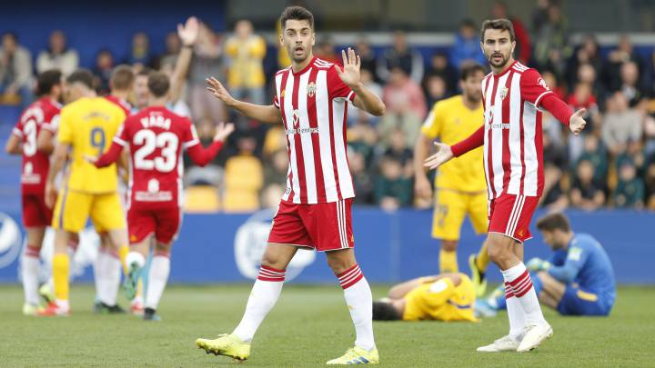
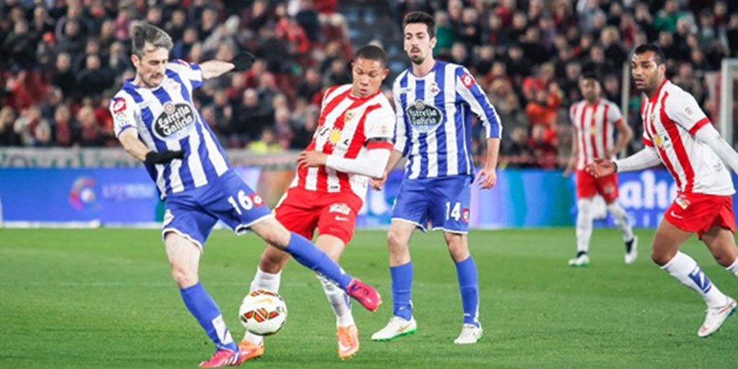

İspanya 2’nci Ligi’nde Real Madrid’in efsane futbolcularından Guti Hernandez’in teknik direktörlüğünü yaptığı Almeria fırtınası esiyor. Guti, takımı ligin zirvesine çıkarmayı başardı.

İspanya 2'nci Ligi'nin 14'üncü haftasında Almeria'nın deplasmanda Real Oviedo ile golsüz berabere kalmasından sonra teknik direktör Pedro Emanuel ile yollarını ayırmasının ardından, Guti Hernandez takımın başına geçti. İspanyol teknik adamın göreve başladığı 15'inci haftada Almeria lider takım Cadiz'in 10 puan farkla gerisinde 2'nci sırada yer alırken, genç teknik adam geçen 10 haftada takımı 45 puan ile ligin zirvesine çıkardı. Guti, Almeria ile ligde geride kalan 10 maçta 6 galibiyet, 3 beraberlik ve 1 mağlubiyet alarak toplamda 21 puan toplamayı başardı ve rakibi Cadiz'i averaj ile geçirerek 45 puan ile takımını liderliğe yükseltti. 43 yaşındaki teknik adamın öğrencileri söz konusu 10 maçta 20 gol atarken, kalesinde ise 10 gol gördü.

Futbolculuk kariyerinde sayısız başarısı bulunan ve almadık kupa bırakmayan Guti Hernandez, teknik direktörlüğe de oldukça başarılı başladı. Teknik adamlık kariyerine 2013-2014 yılında efsanesi olduğu Real Madrid'in altyapısında antrenör olarak adım atan İspanyol teknik adam eflatun-beyazlıların altyapı takımlarını çalıştırdıktan sonra 2018 yılının Temmuz ayında Türkiye yolunu tuttu. Guti Hernandez'in 2010 yılında futbolcu olarak görev aldığı Beşiktaş ile bu kez antrenör olarak yolları kesişti. Siyah-beyazlıların o dönemki teknik direktörü Şenol Güneş'in yardımcılığına getirilen Guti'nin Beşiktaş kariyeri 2019 yılının Mayıs ayında sona erdi. Kasım ayında Almeria'nın başına geçen Guti, kariyerinde ilk kez 1'inci teknik adamlık görevini yürütüyor.